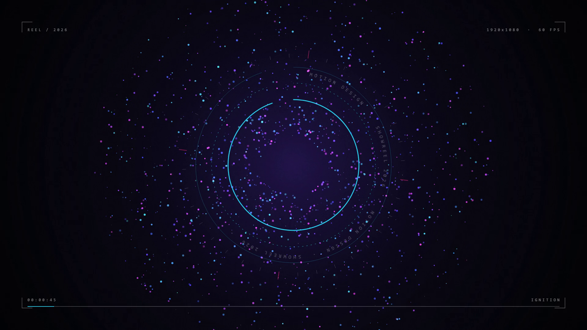
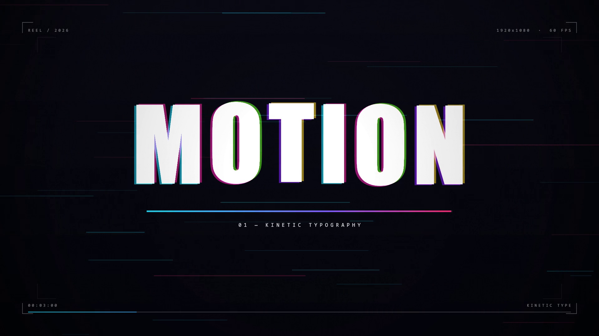
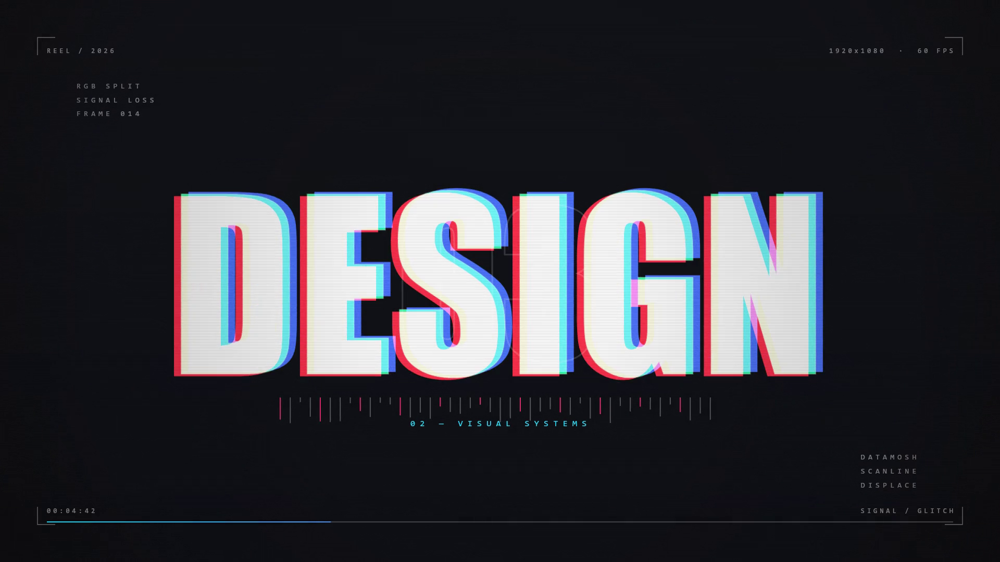
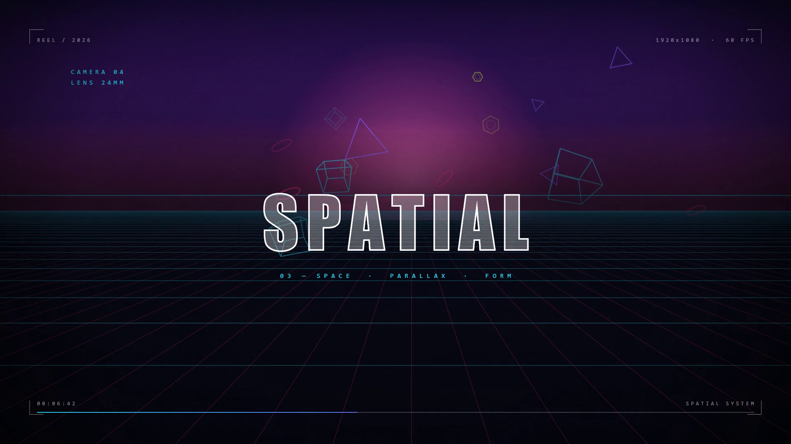
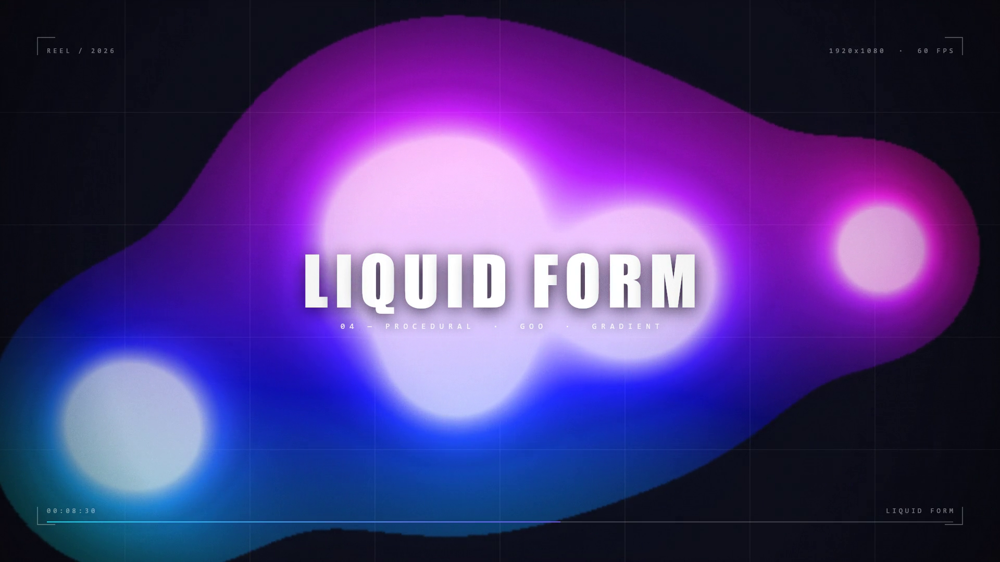
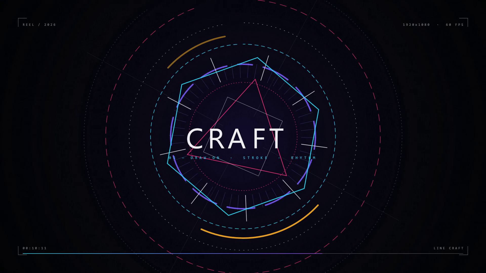
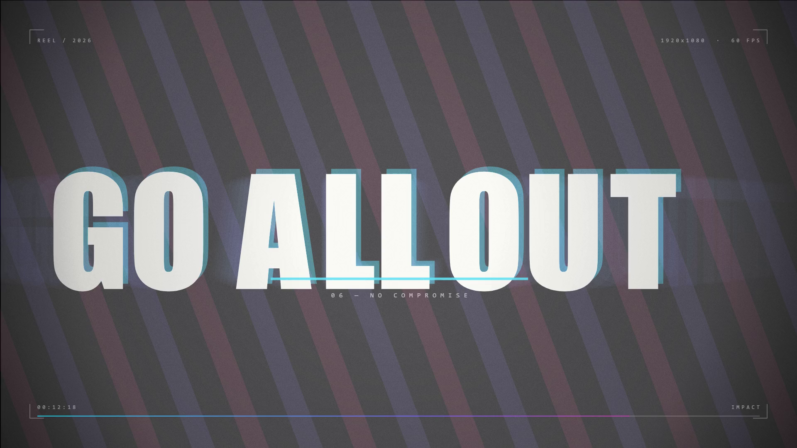
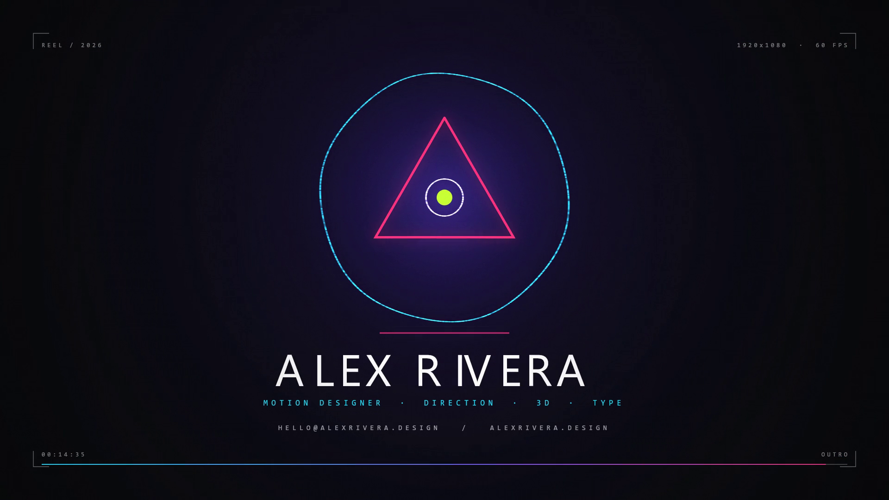

make a dynamic 15-second motion graphics video that shows what an incredible motion designer you are, like it's your showreel for a résumé. go all out
Not a demo of one effect — a reel. That means range: typography, systems, simulation, glitch, and a resolved end card, cut hard and cut on the beat.
No After Effects, no Cinema 4D, no timeline UI. Everything had to be authored as code and rendered deterministically to a real video file.
Résumé-grade means the pacing, easing curves, and finishing passes matter as much as the effects. Craft over novelty.
Beat = 0.46875s, bar = 1.875s. Scene boundaries sit at 0.000 / 1.875 / 3.750 / 5.625 / 7.500 / 9.375 / 11.250 / 13.125.
There is no manual timing drift anywhere in the piece — the renderer takes a timestamp and the audio synth takes the same timestamp.
Opens atmospheric, escalates through type and glitch, peaks at the spatial/liquid mid-section, then hard-inverts to a light background for the loudest line before resolving.
The background flip at t = 12.27s is the single strongest contrast beat in the reel, and it is placed one bar before the end card.
No browser, no headless Chrome, no frame dumps to disk. A native Canvas2D backend renders each frame in-process, hands raw RGBA to ffmpeg over a pipe, and ffmpeg encodes H.264 as the pixels are produced.
@napi-rs/canvas ships prebuilt native binaries — full Canvas2D with real font rasterisation and no browser install, running ~11 fps in-process.
Piping RGBA straight to ffmpeg means the 900 frames never touch the filesystem. Total encode wall time: 86 seconds.
All "randomness" comes from hash1() / hash2() — sin-based integer hashes seeded by frame index and particle id.
Re-running the renderer produces a bit-identical stream. That is what makes visual QA possible at all: you can sample a pixel at frame 675 and reason about it.
function renderFrame(frame) { const t = frame / FPS; // continuous time, not frame math const idx = sceneIndexOf(t); const scene = SCENES[idx]; ctx.setTransform(1,0,0,1,0,0); ctx.fillStyle = '#000000'; ctx.fillRect(0, 0, W, H); const [sx, sy] = shakeFor(t); // decaying impact shake ctx.save(); ctx.translate(sx, sy); SCENE_FN[scene.id](t - scene.start); // scene gets LOCAL time ctx.restore(); postFx(t, frame, idx); // vignette, grain, HUD, flashes return ctx.getImageData(0, 0, W, H).data; // RGBA → ffmpeg stdin }
24 purpose-built curves — outExpo for slams, outBack for overshoot, outElastic for the logo pop, inOutCubic for camera moves. Nothing in the reel moves linearly.
Per-letter entrances use outExpo for position and outBack for scale/rotation simultaneously, so letters travel hard and land soft.
Each of the six "MOTION" glyphs is drawn 8 extra times at t − k·0.014s with alpha decaying as 1 − k/8, composited additively.
Because the ghost pass is a pure function of time, the blur is temporally stable — no shimmer, no per-frame noise.
A real scalar field, not a blur trick. 11 moving blobs contribute r²/d² per pixel into a 640×360 buffer (≈3.2M distance evaluations per frame).
Threshold at 0.72 for a soft edge, 1.35 for the hot core. Hue is mapped from screen x, y and time, then upscaled with smoothing plus an additive bloom pass.
The word is composited into an offscreen buffer three times in pure R, G and B with globalCompositeOperation = 'lighter' — that is the chromatic split.
Then 26 horizontal bands are blitted back with hash-driven x-displacement and vertical jitter. Roughly 55% of frames are clean, 30% mild, 15% heavy — so the word stays readable while the signal still breaks.
Floor lines use a real depth projection: y = horizon + k / z with z scrolling a fractional unit per frame. Radial lines fan from a drifting vanishing point.
Solid props are 8-vertex cubes rotated in two axes and perspective-divided, drawn as wireframes so they read as design objects rather than renders.
Rings animate by moving lineDashOffset while the arc end-angle sweeps 0→2π — a genuine draw-on rather than a mask wipe.
The outro mark traces its triangle edge-by-edge with a parametric length counter, so the stroke lands exactly on the logo lock.
Vignette, four tiling noise grains rotated per frame in overlay blend, 2-frame white flashes on every cut, and beat-synced brightness pulses at 128 BPM.
The vignette and HUD ink both flip lighter on the paper-background scene so the contrast beat stays crisp instead of muddy.
Impact for condensed display, Segoe UI for the lockup, Consolas for the HUD layer. Letter-spacing is animated per glyph via a manual tracking walker — which is also what enables per-letter staggers.
Chromatic misregistration on the headline is intentional: two coloured copies offset ±7px under lighter, reading like print mis-impression.
Synthesised from scratch in NumPy — no samples, no library. 128 BPM, 8 bars, 48 kHz stereo, written to WAV and muxed in the same ffmpeg pass as the video.
Kick — frequency-swept sine (150→44 Hz) with a noise click and a 47 Hz sub tail.
Clap — four staggered noise bursts plus a body envelope, band-limited 1.1–7.2 kHz.
Hats — high-passed noise, closed on 8ths, open on the & of 3, 16th ghosts from bar 1.
Two bars each of Am → F → C → G. Saw bass with tanh drive, low-passed at 260 Hz, octave-jumping on syncopated 16ths.
Detuned saw pad from bar 2, three-partial pluck arp from bar 2 with a 3/16 delay tap.
Sidechain ducks everything else 58% with a 70 ms recovery on each kick.
Riser before every bar line, impact boom on every downbeat, snare roll into bar 6, down-lifter and tail on the end card.
# duck everything but the kick on each downbeat duck = np.ones(N) for kt in kick_times: i0 = int(kt * SR); i1 = min(N, i0 + int(0.30 * SR)) tt = np.arange(i1 - i0) / SR duck[i0:i1] = np.minimum(duck[i0:i1], 1.0 - 0.58 * np.exp(-tt / 0.070)) L *= duck; R *= duck L = np.tanh(L * 1.18) * 0.96 # soft clip L *= 0.94 / max(np.max(np.abs(L)), np.max(np.abs(R)))








Trusting a render because it "looked fine" is how bad cuts survive. Every claim below is measured by decoding frames back out of the finished MP4 and sampling pixels — not by re-rendering the source.
| Frame | Time | Scene | Centre px | Corner px | Avg lum | Reads as |
|---|---|---|---|---|---|---|
| 0130 | 2.17s | kinetic | 255,253,255 | 004,005,010 | 42.7 | headline landed |
| 0280 | 4.67s | glitch | 072,107,225 | 004,003,008 | 48.5 | RGB split live |
| 0520 | 8.67s | liquid | 253,255,255 | 003,003,011 | 84.4 | goo, not wash |
| 0674 | 11.23s | line | 016,011,040 | 002,003,006 | 10.7 | dark, pre-cut |
| 0675 | 11.25s | impact | 169,137,153 | 215,213,209 | 232.1 | 2-frame flash |
| 0700 | 11.67s | impact | 085,023,054 | 179,175,169 | 207.2 | clean paper bg |
| 0880 | 14.67s | outro | 033,021,082 | 004,005,008 | 15.8 | lockup resolved |
| 0899 | 14.98s | outro | 003,001,009 | 002,002,002 | 2.3 | faded to black |
Duration 00:00:15.00, start 0.000000, overall 9816 kb/s. Video stream H.264 High, yuv420p progressive, 1920×1080, 60 fps / 60 tbr.
AAC LC, 48 000 Hz stereo, 253 kb/s. Decoded RMS 0.2568, peak 0.932 over 15.02s — real programme, not silence.
Metaball field saturating into a flat wash; glitch firing on 42% of frames so "DESIGN" never read; heavy vignette dirtying the paper scene.
All three were found by pixel sampling and fixed before the final encode.
cd showreel && npm installpython audio.pynode render.js showreel.mp4node verify.js 0,675,677,899node preview.js 510